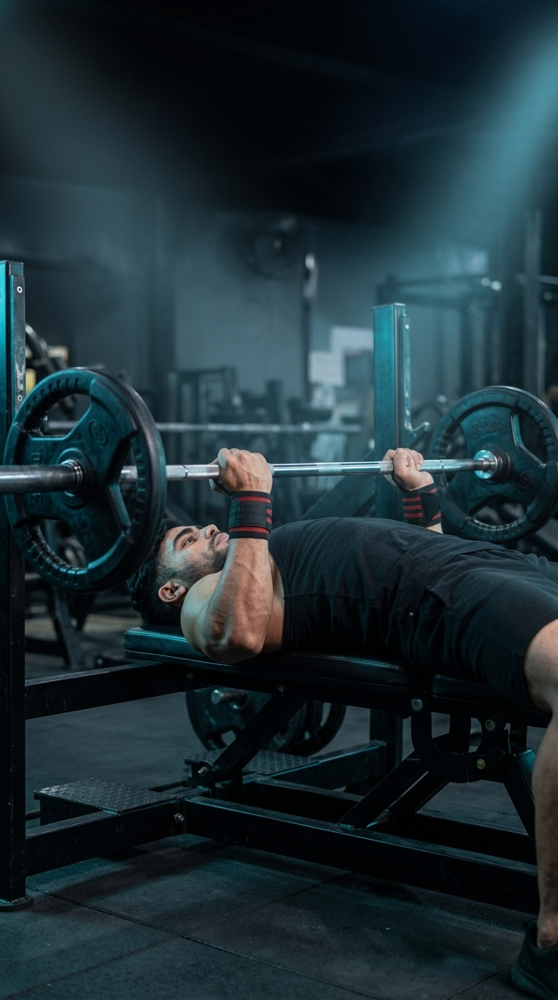

Primary Muscle
Triceps Brachii
Build Bigger, Stronger Triceps While Increasing Pressing Strength and Upper-Body Power
The Close-Grip Bench Press is one of the most effective compound exercises for building stronger, thicker triceps while also developing the chest and shoulders. By using a narrower grip than a traditional bench press, the movement shifts greater emphasis to the triceps, making it an excellent choice for improving lockout strength, increasing pressing performance, and building overall upper-body muscle mass. It is suitable for both strength athletes and anyone looking to maximize arm development.

Triceps Brachii
Barbell & Bench
Intermediate
Compound
Discover which muscles drive the Close-Grip Bench Press and how the supporting muscles work together to stabilize the shoulders, elbows, and wrists while producing powerful pressing strength and maximum triceps activation.
Long Head, Lateral Head & Medial Head
Chest Pressing Power
Shoulder Stabilizer
Grip & Wrist Stability
Discover how the Close-Grip Bench Press builds stronger triceps, increases upper-body pressing strength, enhances bench press performance, and develops greater muscle mass through a powerful compound movement.
The narrow grip places greater emphasis on the triceps, making this one of the best compound exercises for increasing upper-arm strength and muscle size.
Stronger triceps help you overcome sticking points and generate more force during the lockout phase of the traditional bench press.
The Close-Grip Bench Press strengthens the chest, shoulders, and triceps together, improving overall pressing power for sports and strength training.
Because the triceps perform most of the work during this exercise, consistent training contributes to thicker, stronger, and more muscular upper arms.
Performing the movement with proper technique improves shoulder stability, elbow control, and overall pressing mechanics during compound lifts.
Unlike isolation exercises, the Close-Grip Bench Press trains multiple upper-body muscles simultaneously, making it highly effective for building strength and muscle efficiently.
Follow these step-by-step instructions to perform the Close-Grip Bench Press with proper grip width, controlled bar path, and strong pressing mechanics to maximize triceps activation while building upper-body strength safely.
Lie flat on a bench with your eyes directly beneath the bar. Grip the bar slightly narrower than shoulder width and plant your feet firmly on the floor.
Keep your wrists straight and squeeze the bar tightly before unracking the weight.
Slowly lower the bar toward your lower chest or upper sternum while keeping your elbows tucked close to your body throughout the movement.
Avoid letting your elbows flare outward to maintain greater triceps involvement.
Push the bar upward by extending your elbows and driving through your triceps until your arms are nearly straight while maintaining control.
Press in a smooth vertical path without bouncing the bar off your chest.
Pause briefly near the top of the movement and contract your triceps before beginning the next repetition.
Focus on driving through your triceps instead of simply moving the bar.
Continue each repetition with a controlled tempo, consistent bar path, and proper technique while maintaining full-body stability.
Prioritize perfect technique over heavier weight to build strength safely and maximize triceps development.
Avoid these common technique mistakes to maximize triceps activation, improve pressing strength, and perform the Close-Grip Bench Press safely and effectively.
Placing your hands excessively close together puts unnecessary stress on the wrists and elbows while reducing pressing efficiency.
Keep your hands slightly narrower than shoulder width to maximize triceps engagement while maintaining joint comfort.
Letting your elbows flare outward shifts tension away from the triceps and places extra stress on the shoulder joints.
Keep your elbows tucked close to your body throughout the lift to maintain proper bar path and triceps emphasis.
Using momentum by bouncing the bar reduces muscle tension, compromises technique, and increases the risk of injury.
Lower the bar under control, lightly touch your chest, and press upward without using momentum.
Excessive weight often leads to poor bar control, incomplete range of motion, and reduced triceps activation.
Choose a weight that allows you to maintain perfect form and complete every repetition with full control.
Apply these expert coaching cues to improve your Close-Grip Bench Press technique, maximize triceps activation, and build greater upper-body strength with every repetition.
Maintain your elbows close to your torso throughout the lift to increase triceps involvement and reduce unnecessary stress on the shoulders.
Tucked elbows create a stronger pressing path and place more emphasis on the triceps.
Lower the bar with a slow, controlled tempo and press it back up smoothly without relying on momentum.
Controlled repetitions improve muscle activation, strength, and overall lifting technique.
Position your hands slightly narrower than shoulder width to maximize triceps engagement while keeping your wrists and elbows comfortable.
A moderate close grip is stronger and safer than placing your hands extremely close together.
Focus on maintaining a consistent bar path, stable body position, and full range of motion before increasing the weight.
Consistent technique builds long-term strength, muscle growth, and helps prevent unnecessary injuries.
Progress from mastering the Close-Grip Bench Press with lighter loads to lifting heavier weights while maintaining proper grip width, controlled bar path, and maximum triceps activation.
Begin with a light barbell to learn the correct grip width, bench position, and stable body alignment before increasing the weight.
Proper grip, stable shoulders, consistent bar path, and full-body stability.
Practice lowering the bar under control while keeping your elbows tucked and pressing smoothly through a full range of motion.
Controlled tempo, elbow positioning, smooth bar path, and balanced pressing mechanics.
Once your technique becomes consistent, gradually increase the resistance while maintaining proper control and full range of motion during every repetition.
Progressive overload, strict form, stronger triceps, and consistent movement quality.
Increase training intensity with heavier loads, paused repetitions, controlled eccentrics, or higher training volume while maintaining perfect lifting mechanics.
Advanced strength development, progressive overload, flawless technique, and maximum triceps stimulation.
Find answers to common questions about Close-Grip Bench Press technique, muscles worked, proper form, training frequency, and how to maximize triceps strength and upper-body development safely and effectively.
The Close-Grip Bench Press primarily targets the triceps brachii while also engaging the pectoralis major, anterior deltoids, and forearms to stabilize and complete the pressing movement.
Its narrower grip places greater emphasis on the triceps than a standard bench press while still allowing you to lift heavy weights and build overall upper-body strength.
Your hands should be slightly narrower than shoulder width. An extremely narrow grip can place excessive stress on the wrists and elbows without providing additional benefits.
Yes. Beginners should start with a light weight, focus on proper grip width and elbow position, and master the movement before progressing to heavier loads.
For muscle growth, perform 3–4 working sets of 6–12 repetitions. For strength development, use heavier weights for 3–6 repetitions while maintaining excellent technique.
Yes. Strengthening your triceps with the Close-Grip Bench Press improves lockout strength, helping you press heavier weights and enhance overall bench press performance.
Explore other triceps exercises that complement the Close-Grip Bench Press and help you build stronger, bigger arms through both compound and isolation movements using different equipment and training variations.


Continue building stronger, bigger triceps with step-by-step exercise guides covering proper technique, muscles worked, common mistakes, expert coaching tips, and progression strategies for every fitness level.